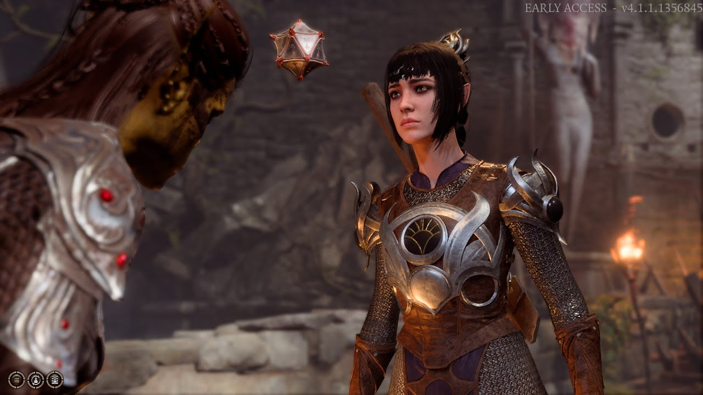
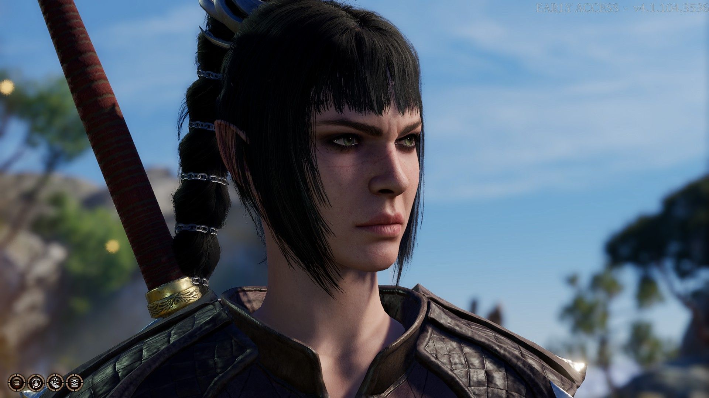
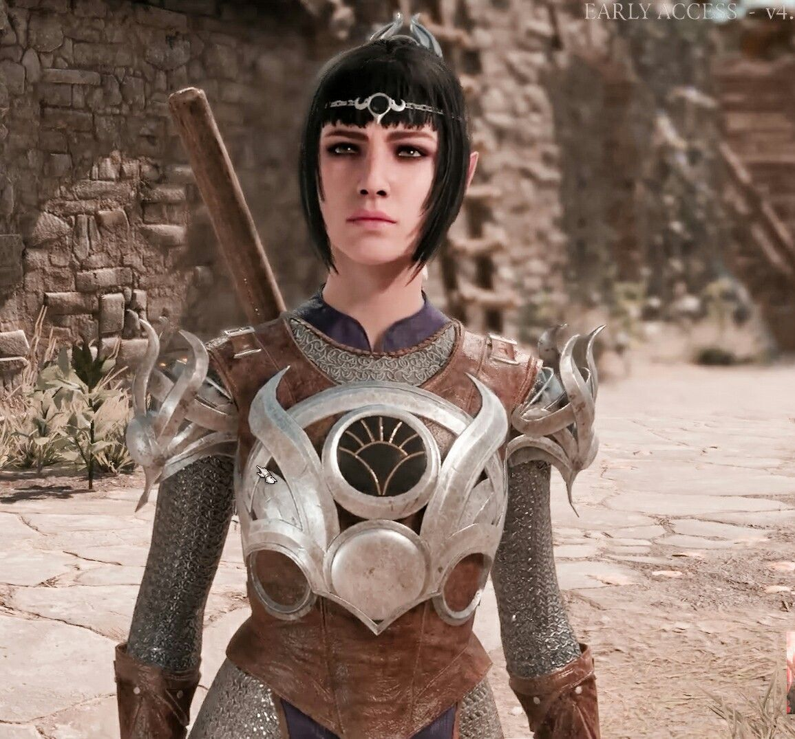
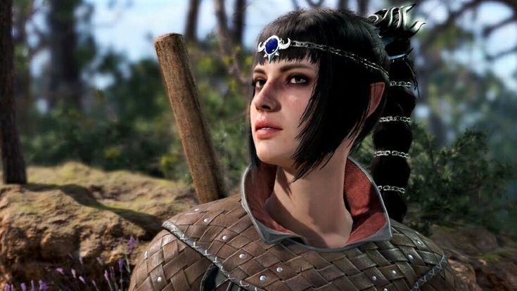

Shadowheart
- Race: Half-Elf
- Class: Cleric

About
Source: Baldur's Gate III Homepage
A devoted cleric of Shar, goddess of darkness and loss, Shadowheart agreed to have her memories wiped as part of a holy mission. Now its sole survivor, she must deliver a powerful relic back to her kin in order to win Shar's love and have her memories restored -- but all the while, she is tormented by strange, painful magic that she struggles to understand.
Gallery


